Hear from Gaza
Updates and stories shared by the people doing the work.
GAZA SOUP KITCHEN · THE WORK CONTINUES
We are not an outside aid group; we are the people of Gaza, serving our own community.

One-time · $50 selected
Continue securelyConfirm your amount and frequency with the secure donation provider.
More donation options ↓These are the voices behind the need. The hands that receive. The hearts that endure.
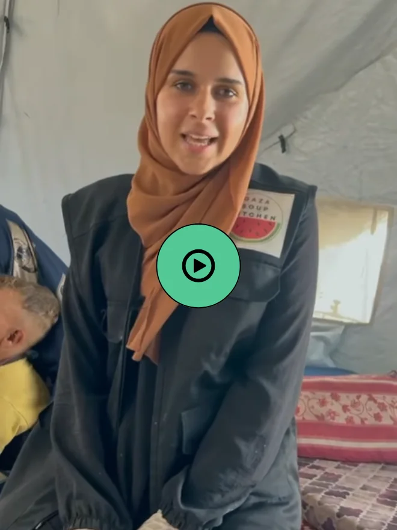
Voices from Gaza ↗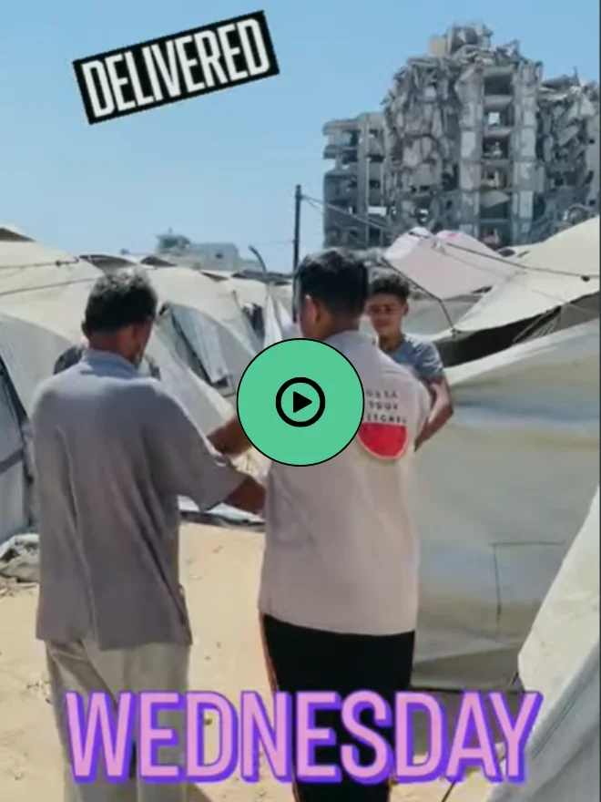
Voices from Gaza ↗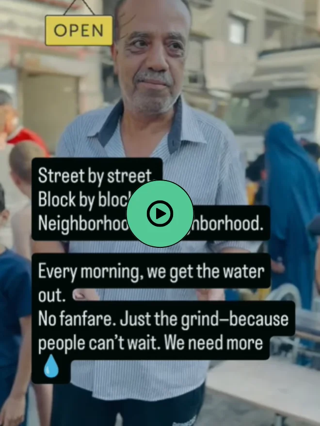
Voices from Gaza ↗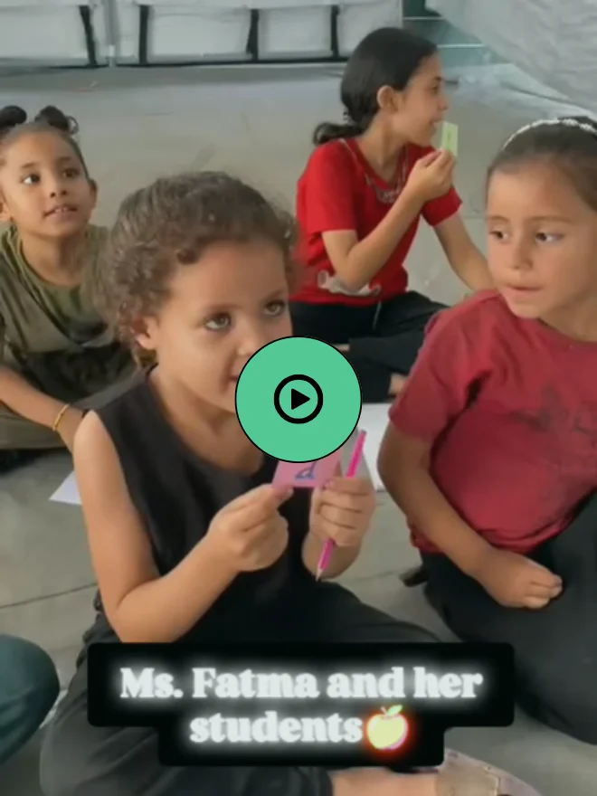
Voices from Gaza ↗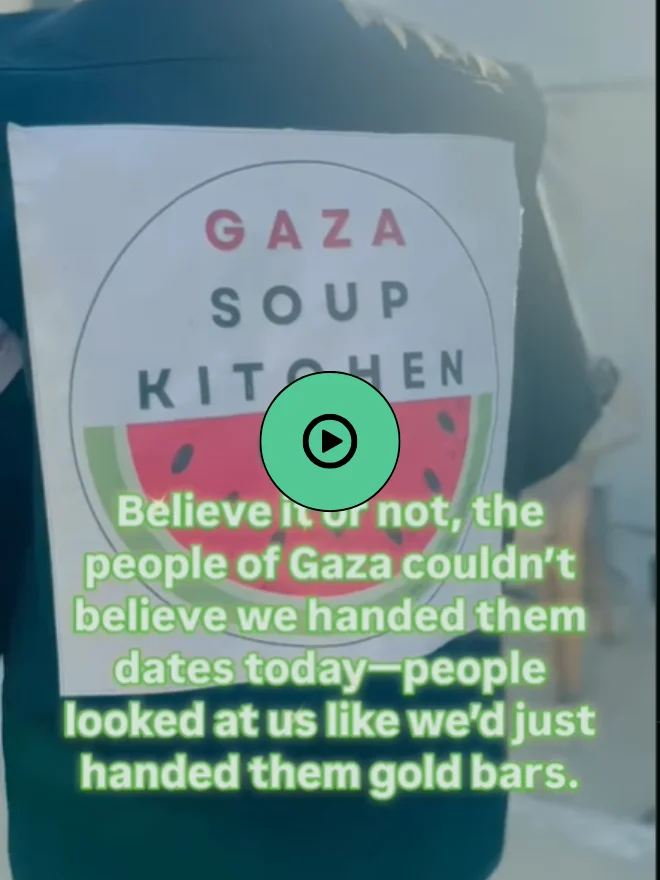
Voices from Gaza ↗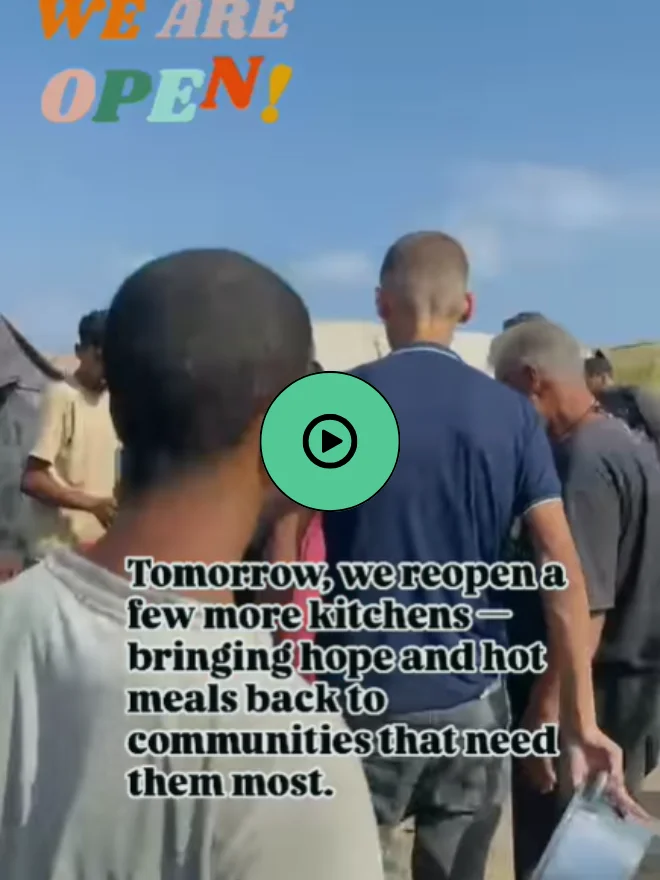
Voices from Gaza ↗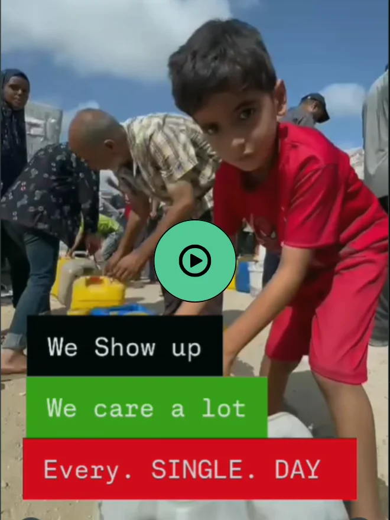
Voices from Gaza ↗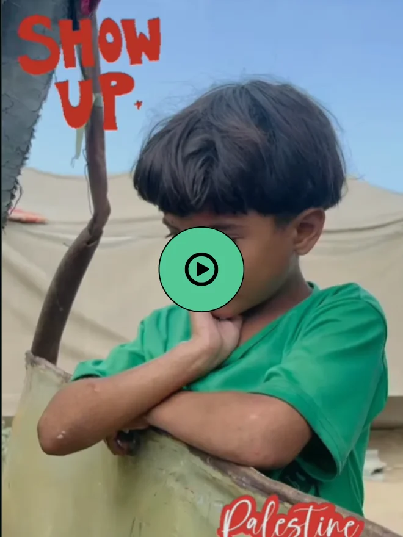
Voices from Gaza ↗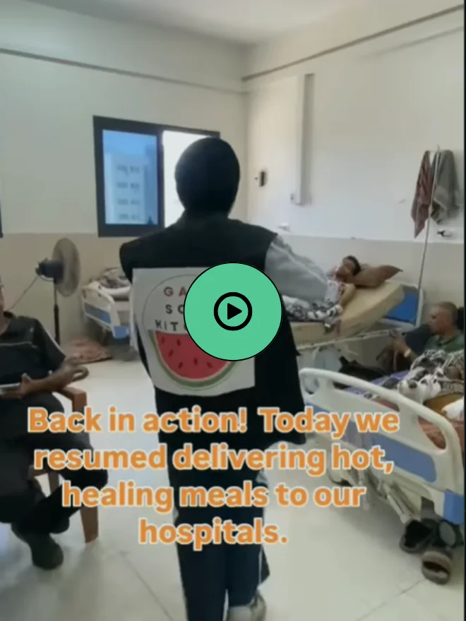
Voices from Gaza ↗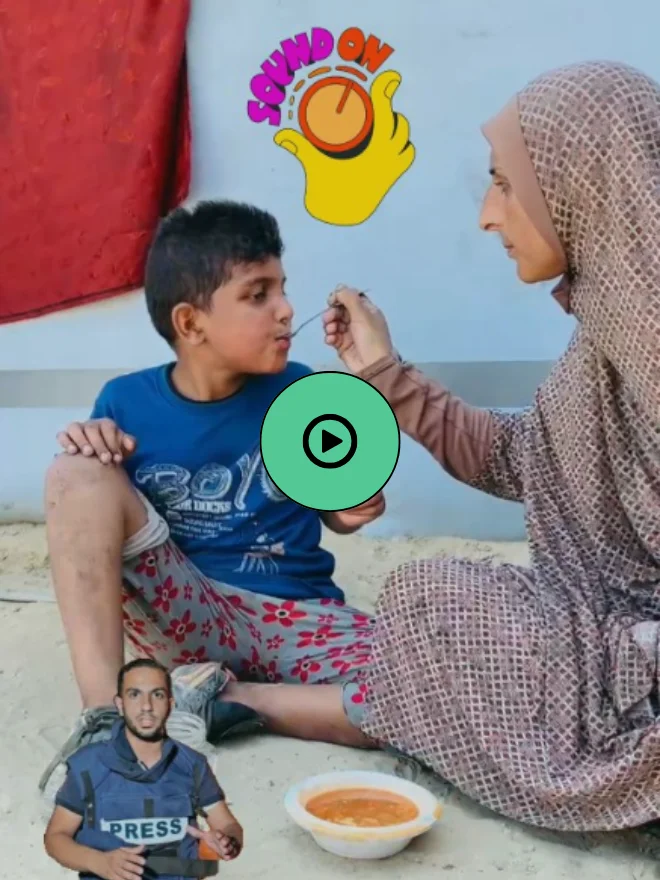
Voices from Gaza ↗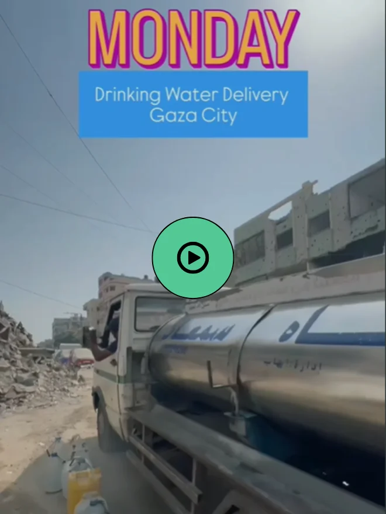
Voices from Gaza ↗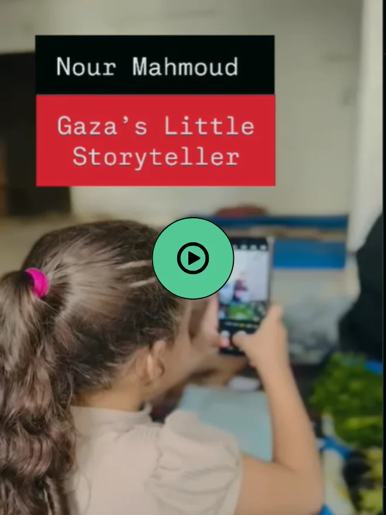
Voices from Gaza ↗
The initiative began by feeding 150 families a day in April 2024 and quickly grew to serving 3,000 people daily. Operating amidst unimaginable scarcity and risk, our team works tirelessly to prepare and serve hot, nourishing meals. We are not an outside aid group; we are the people of Gaza, serving our own community through the Gaza Soup Kitchen and local Palestine NGO efforts. Currently, across 10 active kitchen sites, the team prepares simple vegetarian meals—like rice, pasta, and khubeza (a wild foraged green)—often with severely limited supplies that depend on ongoing Palestine donation and Gaza help.
This is a lifeline sustained by grassroots generosity. With your support to donate to Palestine and help Gaza, it continues.
Gaza Soup Kitchen has captured global attention for its unwavering service under siege. Major media outlets—across print, digital, and television—have turned their lens to this frontline of compassion, courage, and community, highlighting the power of a Palestine NGO donation and how people worldwide choose to help Gaza through food aid. Not because we sought the spotlight, but because feeding people in war-torn Gaza has become one of the most powerful stories of hope and humanity in our time.
In early 2024, two brothers, Hani and Mahmoud Almadhoun, founded the Gaza Soup Kitchen. What began as a personal vow to ensure their neighbors in Beit Lahia, Gaza, wouldn’t go hungry quickly grew into a grassroots Palestine NGO movement, supported by people worldwide who wanted to donate to Palestine and help Gaza families.
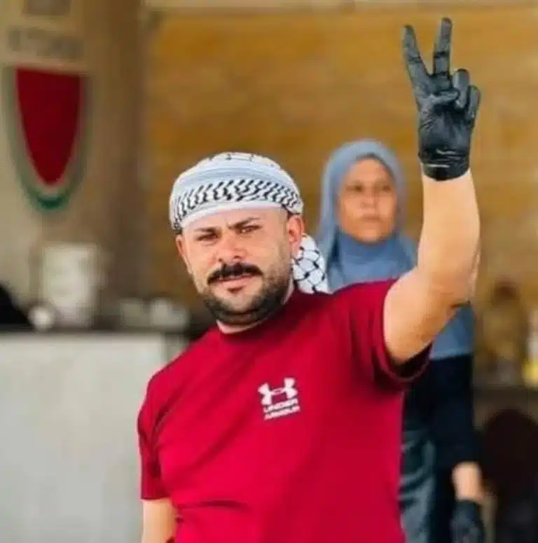
Mahmoud, a central pillar of our mission, was tragically killed in a drone strike, but his legacy lives on through his family and friends who manage our Gaza Soup Kitchen today. His final word, "Mostamreen" (مستمرين), which means "we will continue," is our guiding principle.
Read Mahmoud’s Op-Ed in Washington Post ↗Behind every meal served is a team of 63 heroes working tirelessly each day on the ground in Gaza. Our mission is simple yet profound: to sustain our community, help Gaza families in need, and affirm our shared humanity.
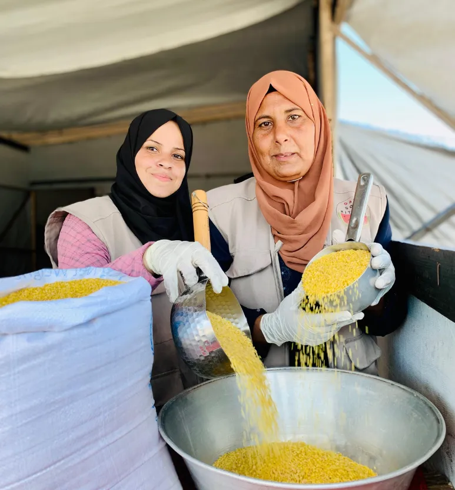
Join our free community to hear from the people behind Gaza Soup Kitchen, follow updates from Gaza, and talk with others who care.
Updates and stories shared by the people doing the work.
Get to know the team and the people behind each meal.
Ask questions, join conversations, and keep in touch.
99% of every dollar you give, goes directly to
feeding and supporting the people of Gaza.